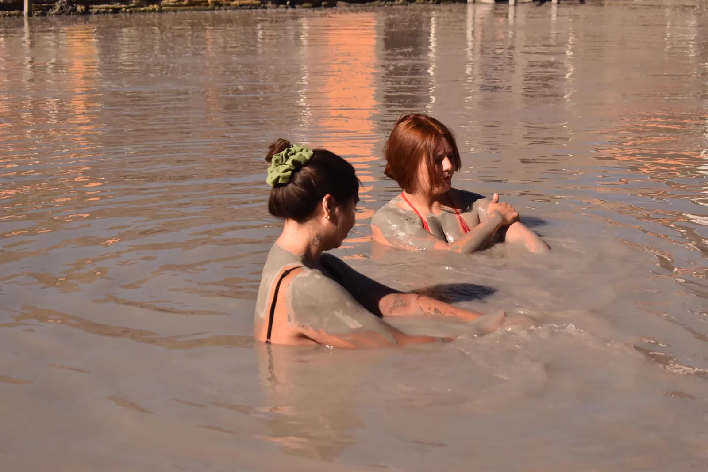

Termas de Copahue en Caviahue

1 / 6
Caviahue y alrededores · Verano
A unos 18 km del pueblo, la villa termal de Copahue con sus piletas, lagunas de barro y fumarolas.
Copahue es una villa termal en la ladera del volcán, famosa por sus aguas, barros y vapores. Se puede pasar el día en las piletas al aire libre, recorrer las lagunas termales y ver las fumarolas que salen de la montaña.
Antes de organizar la visita, verificá los servicios habilitados y sus horarios para la fecha de tu viaje.
Información oficial
Sitio oficial de las Termas de CopahueUbicación
Copahue y sus termas
Ver ubicación en Google MapsTu lugar en Caviahue
Casas, cabañas, departamentos y hostal boutique para disfrutar de la Patagonia con tu familia, amigos o pareja. Reservá online o por WhatsApp.